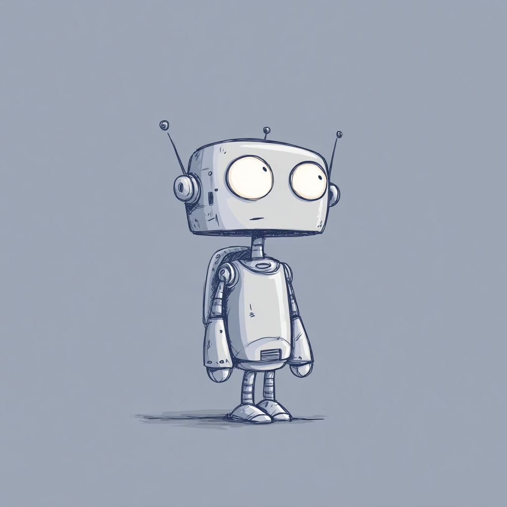
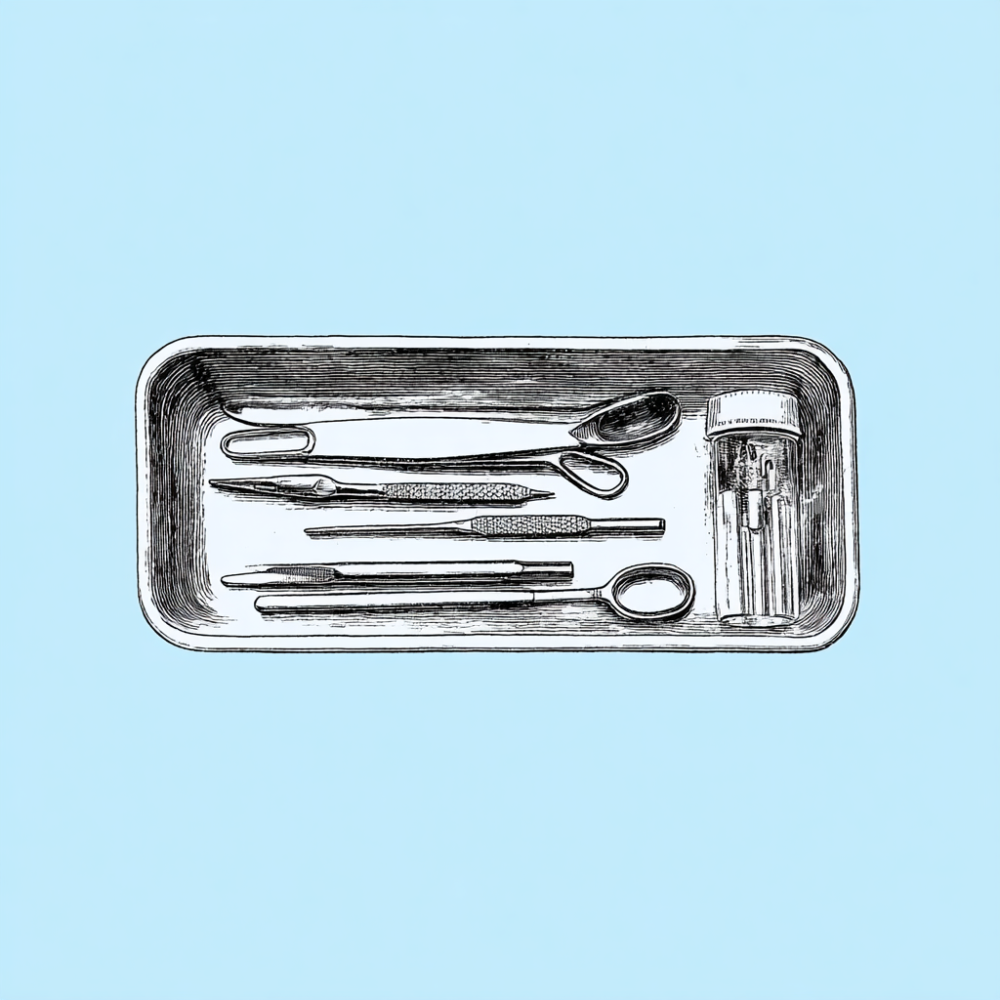
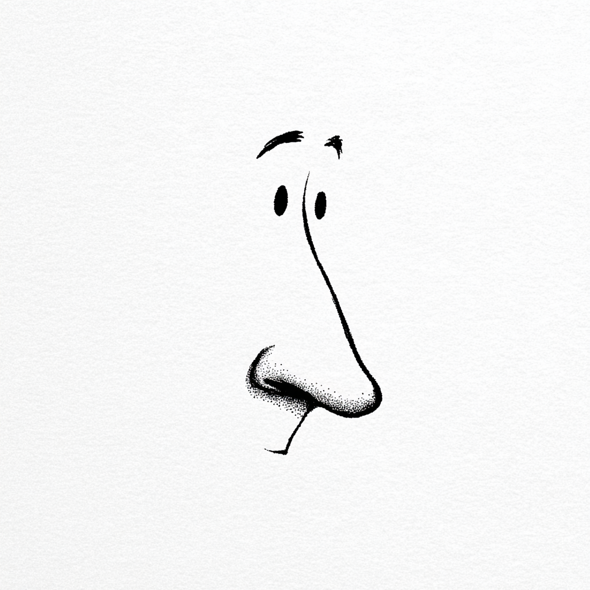

· Surgeon · Data Scientist · Consultant ·
I'm a surgeon and data scientist, building tools at the intersection of medicine and technology. My work spans clinical care, machine learning, and healthcare consulting. I love working on complex problems, self-reflecting, and learning from others.
Building and evaluating medical LLMs. Training for the Tokyo marathon. Working through Advent of Code to sharpen my Python. Leveling up my French with French Netflix. Currently reading: Brain on Fire by Susannah Cahalan.
Updated December 2025
Background in plastic surgery, gender-affirming surgery, burn surgery, and critical care. Clinical perspective grounds everything I build.
From small clinical datasets to large-scale NLP projects. Machine learning, predictive modeling, and turning messy data into insight.
Subject matter expertise for health AI organizations navigating the space between innovation and patient safety.
A betting model that analyzes player statistics, surface performance, and historical matchups to predict professional tennis outcomes.
 Machine LearningNLP model trained to identify Russian propaganda in text, distinguishing state-sponsored narratives from organic content.
 Clinical ResearchProspective study examining patient-reported outcomes and satisfaction following gender-affirming masculinizing chest surgery.
 Computer VisionDeep learning model for predicting rhinoplasty status, using image recognition to assess natural versus aesthetic results.
When I'm not in the data or the hospital, you'll find me on the tennis court chasing a 4.0 rating, underwater somewhere tropical, or training for the next marathon. I'm also perpetually behind on my podcast queue.